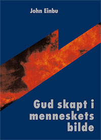

|
|
Gud skapt i menneskets bilde |
|
Forsiden
Finnes det en sann matematikk? Gud skapt i menneskets bilde
Bevissthetens logikk
|

Dette er en religionskritisk bok. Men i motsetning til de fleste bøker skrevet av ateister, så er ikke målet med boken å la den kristne guden eller guder generelt fremstå i et mest mulig kompromitterende lys. Boken er ikke polemisk og det drives ikke harselas med Kirken eller de kristne. Ingen kristne bør derfor føle seg krenket ved å lese boken. Derimot tar boken sikte på å gi, ved hjelp av rasjonelle argumenter, en mest mulig objektiv vurdering av hvor sannsynlig det er at guder finnes og spesielt den kristne guden. Grunntesen er at guder ikke finnes, men likevel er forfatterens mål ikke å få rett for enhver pris, men å finne sannheten om dette spørsmålet. Det underslås derfor ikke at det kan legges fram holdepunkter for at guder finnes, og slike blir presentert i boken og tillagt vekt. Last ned innholdsfortegnelse og forord for Gud skapt i menneskets bilde. - Jeg har opplevd Einbus manuskript som et usedvanlig interessant religionskritisk og religionsanalytisk manuskript. Det ligger klart mye arbeid bak manuskriptet. Forfatteren støtter seg til litteratur skrevet av psykologer, biologer, historikere, naturvitenskapsmenn, sosialantropologer, teologer og filosofer. Einbu har funnet fram til mye interessant litteratur. Selv om mye av denne litteraturen er religionskritisk, prøver Einbu også å ta hensyn til standpunkter som religiøst troende har formulert. Einbu er godt orientert om svært mye. En hovedtanke hos forfatteren er at all religion er menneskeskapt. Selv om argumentasjonen hans for det meste er kritisk, er den på ingen måte ensidig. Manuskriptet er klart og oversiktlig skrevet og skulle være lett forståelig for alle med et visst minimum av allmenndannelse. Det har en nøktern stil, er lærerikt og noen ganger vittig. Finngeir Hiorth, forfatter og pensjonert universitetslektor i filosofi. - Einbu tar opp spørsmålet om vi har grunn til å tro at det finnes guder. Temaet bør være av interesse for mange, men det er det ikke tidligere behandlet i noen egen bok på norsk. Jeg kjenner heller ikke til noen monografier om emnet på andre språk.
Generelt vil jeg si at boken er klar, velordnet og
stringent. Forfatteren sammenfatter mye interessant stoff og finner ofte nye
innfallsvinkler. Enkelte nye, meget treffende allegorier skal han ha ros
for. Ronnie Johanson, religionskritisk skribent. 227 sider. Innbundet. Portofritt tilsendt for kr. 298,- bestill! |